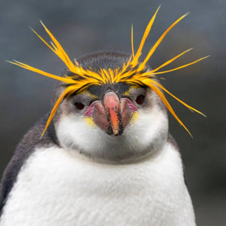
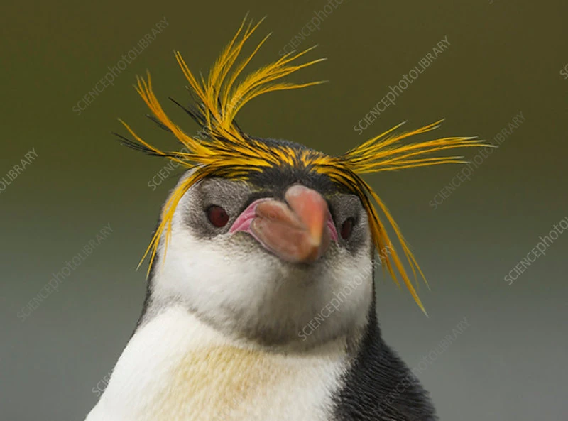
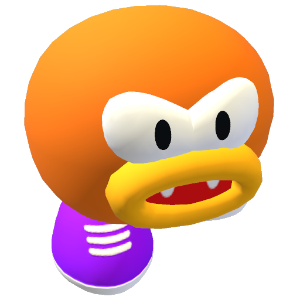
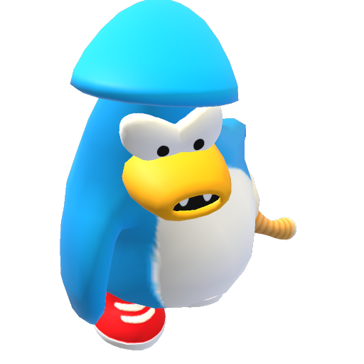
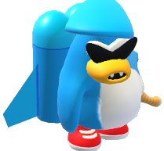
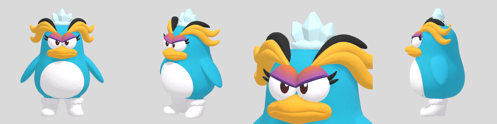
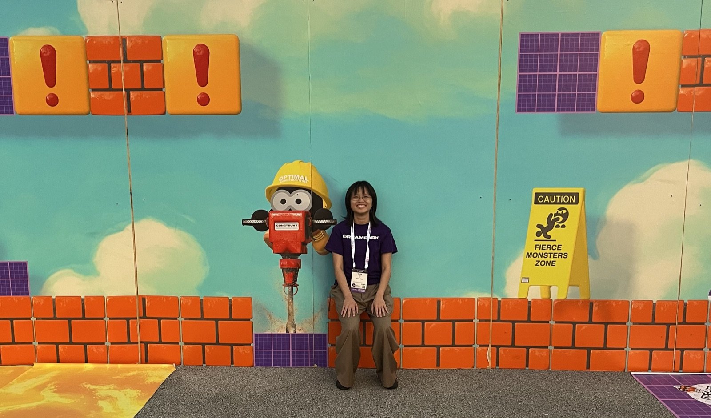

Selected work / mixed reality game
Super Adventure Land
Shaping a collection of playful mechanics into a five-world adventure.
01 / Boss design
Mama Pengo: a new boss
I created Mama Pengo around Snowlands’ two defining elements: penguins and ice pits. Her belly slide becomes an attack, while the ice gives players a way to fight back.
Belly slide attack
Mama Pengo slides on her belly across the ice toward the player, dealing damage on contact.
Break the ice to counter
The hammer power-up opens a hole in her slide path. Mama Pengo falls through and takes damage; her frosted breath restores the ice for the next exchange.
From reference to final character
I based Mama Pengo on , exaggerating their yellow-and-black feather crests to give her an expressive face. I added sunset-colored eyeshadow for extra flair, while keeping her consistent with and Super Adventure Land’s existing visual style.
I art-directed in Higgsfield and generated the final 3D model with Meshy. With Claude Opus 5.5, I developed a Blender Python workflow for custom rigging and keyframed animation, then integrated the character into Unity through Unity MCP.
I directed and refined her animation timing, blinking, expressions, and feather-crest movement. Iteration addressed deformation issues like distorted eyeshadow; the final facial setup used shader-driven eyes adapted from ’s system.
Selected explorations


Royal penguin references · feather crests and facial features

Jubbo · existing game character


Pengo & Jetpack Pengo · existing Snowlands characters

02 / Expansion
Expanding Dream Sequence
- Levels
- 15 → 40
- Islands
- 5
- Estimated playtime
- 15 → 45 min
Each island brings a distinct environment, new layouts, and mechanics that build on familiar game elements. A boss encounter closes each eight-level chapter, followed by a pause before players teleport to the next island.
One new element at a time
I designed the progression to teach one new mechanic at a time, giving players a chance to practice before combining it with familiar elements in later levels.
01 / Introduce
02 / Practice
03 / Combine
The same approach prepares players for boss combat: two preceding levels teach players to use cover before applying it against Lionheart.
01 / Introduce
02 / Practice
03 / Apply
World map diorama
I built a diorama for each island and assembled them into a 3D map that shows the adventure’s scope, tracks progress, and previews what comes next. sails to each destination, unlocking it for the player to touch and select.
With AR’s viewpoint tied to the player’s movement, I used a custom cutout shader to create a zoom-like transition: the selected island moves to the center as the surrounding map is cropped away.
03 / Additional features
Feature gallery
A few highlights I added: new characters, mechanics, and animations.

Demo at IAAPA Expo 2025, Orlando, Florida
Cannonsnout, the game’s main villain.
Built on Super Adventure Land’s existing world, assets & systems.